Data Management & Compute
CSS Bootcamp — Day 2
2026-09-17
Forewords
Who am I
- Émilien Schultz
- Research engineer / data scientist at CREST
- Research facilitator: I help on data & code
- emilien.schultz@ensae.fr — office 4044
Today’s rule
Everything we do today has to survive the loss of your computer. Scientific computation needs robustness, not brittleness.
3 questions
- What is your background ?
- What is the largest dataset you ever opened?
- Did you ever meet limit to run scripts/computation?
Programme
- Some elements of scientific computing
- Reproducibility, open science & DevOps
- Organising a data project
- Storage vs compute: sizes, HPC
- Onyxia & remote services
- Secrets & security hygiene
- SSH & remote servers
- Hands on
The philosophy of the day
The unholy trinity
- Computational service (compute)
- Scripts / software / treatments (code)
- Data
Each aspect has specific tools/best practices.
And now, also AI
Is it a fourth dimension ?
- Models
- Workflow
- Tooling
- …
What does it change ?
It changes a lot of practices, but not the general philosophy or architecture we are going to see today.
Some elements of scientific computing
Computational social science?
- New volumes of data in fields that were not computational: text, web, admin data, digital traces
- Higher expectations of reproducibility and long-term storage (journals, funders, DMPs)
- New tools (LLMs, embeddings, large models) need GPUs and remote compute
- More and more collaboration: several people, several machines, several months
What changes when you leave your laptop
- Nothing is persistent by default
- No mouse, no GUI: command line
- Resources are requested, shared, and (sometimes) paid
- Your credentials become the problem
- Everything has to be written down: scripts, not clicks
This is what makes it reproducible.
Where could you run your code?
- Local computer
- limit of resources / not collaborative / messy
- Cloud services (Google Colab, Kaggle)
- proprietary, limited, black box
- Institutional services (Onyxia datalab, Jean Zay, CREST server)
- conditions of access, availability
- but shared storage, big machines, GPUs
How to size resources? (later)
Reproducibility, open science & DevOps
What is reproducibility
A result or project is never a one shot.
A result is reproducible when the same analysis steps performed on the same dataset consistently produce the same answer.
…on another machine, by another person, later.
Science loves reproducibility
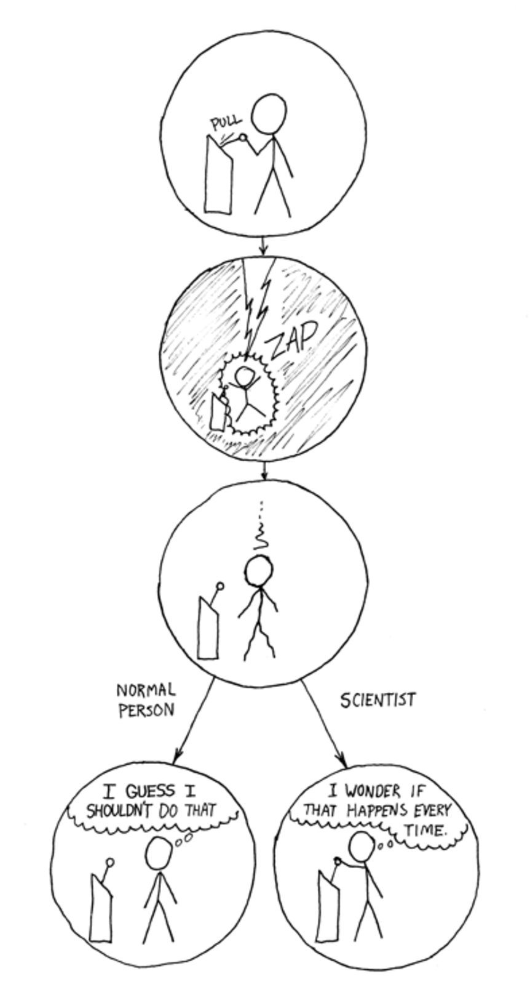
Different flavours of reproducibility

What it entails to be reproducible
Be able to walk the path again: connecting data, software and questions

Openness
Both for data and code, create the possibility of reproducibility
Not always possible for data - especially in social sciences with sensitive informations
What is open science
- Clear methodologies
- Data accessibility: FAIR (Findable, Accessible, Interoperable, Reusable)
- Reusable software (open code, open formats)

How to conciliate privacy with reproducibility
- As open as possible, as closed as necessary
- Anonymise / pseudonymise
- Aggregate
- Synthetic data
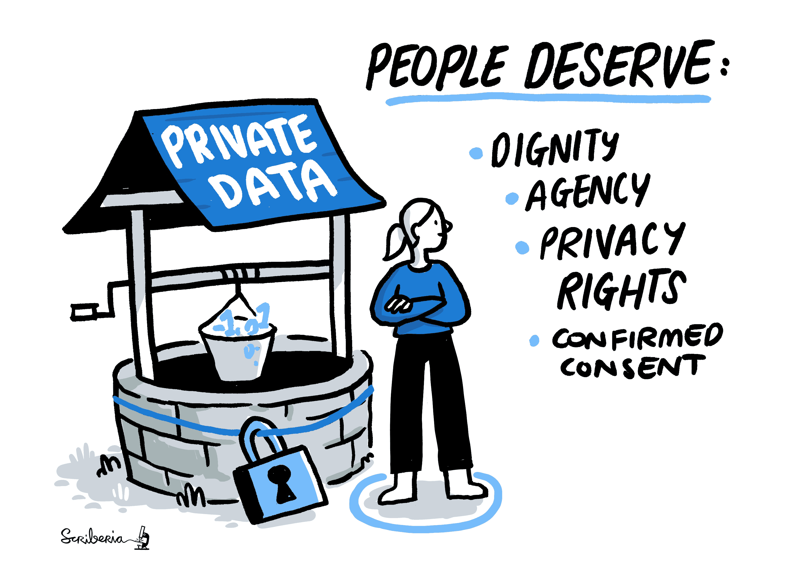
How to achieve it: the minimal kit
- A Git repository with a
README.md: what, how to run, where the data is - A pinned environment:
requirements.txt(orpyproject.toml), Python version - Scripts, not only notebooks
- Data separated from code: raw data immutable, every transformation scripted
- Random seeds, logged parameters, dated outputs
This is the deliverable of the afternoon.
Scripts, notebooks and packages
- Notebooks allow literate programming
- very useful for exploration / prototyping
- Scripts are better for stability, automation, remote execution
- A pathway: notebook → script → package
Rule of thumb: if it runs more than once, it is a script.
Pin your environment (for information)
A script depends on a Python version and packages. Freeze them in a virtual environment.
On a new machine:
Note
.venv/ goes in .gitignore; requirements.txt goes in Git. Alternatives: conda, uv, pyproject.toml.
The DevOps connection
DevOps = practices that let software teams ship code to servers reliably
- version control, automated tests, CI/CD
- containers, infrastructure as code
- logs, monitoring
MLOps = the same for data and models: data versioning, pipelines, experiment tracking ; LLMOps, you guess…
What research borrows from it
A new terminology that is invading computational practice
- Containers (Docker image): a frozen environment
- Pipelines: a Makefile /
run.sh/ snakemake with a clear order of steps - Logs: know what happened when you were not looking
- CI: GitHub Actions running tests on each change
Research workflows should be designed with recomputation in mind
New vocabulary, new collaborations
You will work with research engineers, data engineers, sysadmins of the datalab / HPC.
Knowing their words (pod, bucket, job, image, quota) may allow new collaborations !
The reproducibility ladder
| Level | What you have |
|---|---|
| 0 | a notebook on a laptop |
| 1 | script + README + Git |
| 2 | + pinned environment + data on shared storage |
| 3 | + container / CI |
| 4 | + workflow manager on HPC |
Organising a data project
Rule 0: know your data
- Have a look at your data
- duplicates, empty data, encoding
- Before starting complex treatments
- do simple treatments
- ask yourself if the question and the data match
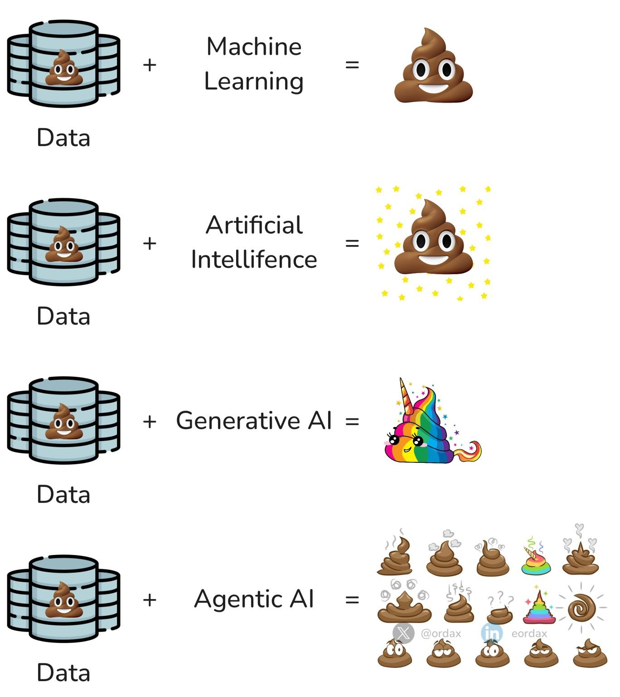
Rule 1: structuring a project
- Separate code from data
- different logic, different tools, different sizes, different rights
- Document / comment your productions
- be explicit (variables, README)
- yes, it is boring, but useful
- Modularise: create distinct elements
- one file per step
- functions rather than repeated code
There will always be another Monday
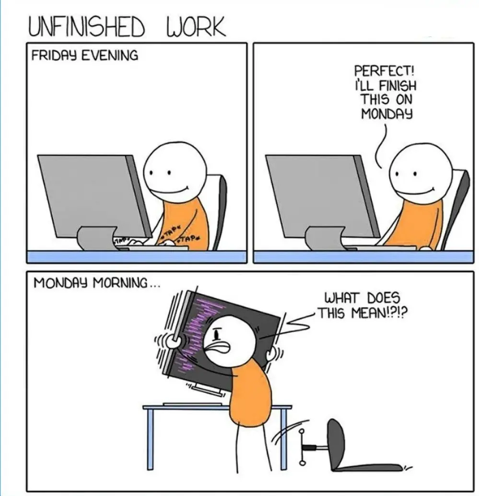
Rule 2: a common file system
project-name/
│
├── README.md # what, how to run, where is the data
├── requirements.txt # pinned environment
├── .gitignore # data/, .env, outputs
├── data/ # NOT in git
│ ├── README.md # -> where the data really is
│ ├── raw/ # original, immutable
│ ├── intermediate/
│ └── processed/ # analysis-ready
├── src/ # one script per step
├── docs/
└── reports/
├── figures/
└── tables/Rule 2 bis: paths
Paths are configuration, not code.
Rule 3: organise the code for collaboration
- Comments in the script ; different files to modularize
- Git: one branch per person/feature, small commits, PR + review
- Log what you do (
printis a start,loggingis better) - Issues as the shared to-do list
- Conventions > update the README
The data lifecycle : a specific philosophy
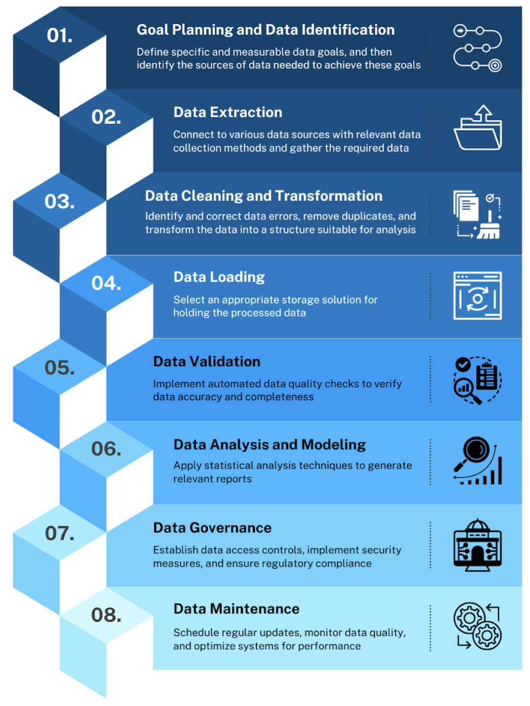
Where to store the data
During the project
- Laptop: temporary
- Institutional solutions
- Cloud solutions: with care (privacy)
After the project
- Zenodo, Figshare, Hugging Face datasets, data.gouv.fr
Ideally, a Data Management Plan
Data management plan: a document that lists the data and how you handle it
- What types of data? What formats?
- What volume?
- Where stored during? Where after?
- Who can access it? Privacy?
- Naming and versioning strategy?
Rule 4: accept to spend time on data preparation
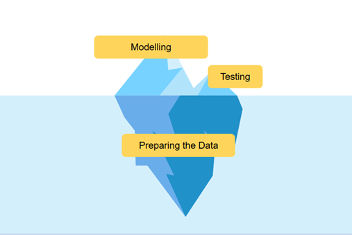
Avoid correcting your data manually
Build a workflow — write scripts
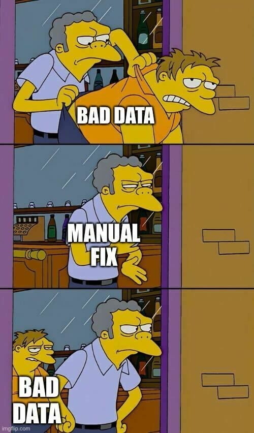
Let’s talk about data format
Format is both information & affordance
What are the best data formats
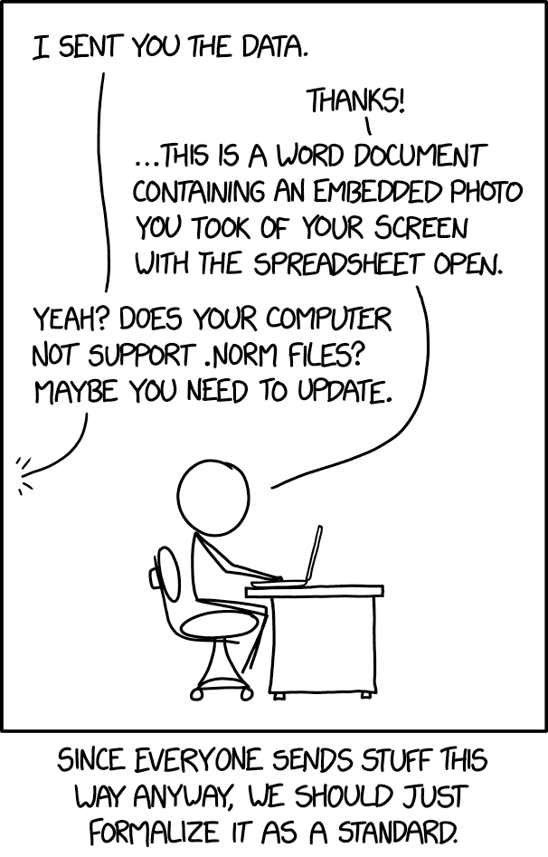
Formats: a practical map
| Format | Pros | Cons |
|---|---|---|
| CSV | universal, human-readable | no types, encoding & separators, slow, big |
| JSON / JSONL | nested, streams line by line | verbose |
| Parquet | typed, compressed, columnar, splittable | binary, needs a library |
| SQLite / DuckDB | relational, joins, SQL | one file, one writer |
Suggestion: open format + think about how you will access it.
Data architecture: aim for tidy data
Take time to transform the data if needed
- Separate raw data from transformed data
- Move from unstructured to structured
- Tidy data

Storage vs compute
What kind of computation do you need?
| Resource | What it limits |
|---|---|
| CPU (cores) | speed, parallelism |
| RAM | the size of what you can hold: the true bottleneck for data |
| Disk | local = ephemeral & fast; object storage = persistent & shared |
| GPU | deep learning, embeddings, LLMs |
| Network | moving 17 GB is not free |
How to think about sizes
| Size | Example | Consequence |
|---|---|---|
| 1 MB | a survey | anything works |
| 100 MB | a year of admin data | Excel breaks, pandas is fine |
| 1 GB | Several years of newspapers | think about RAM |
| 10–100 GB | full Wikipedia, a month of Reddit | stream or sample, remote machine |
| 1 TB+ | you need a data engineer |
Rules of thumb
- RAM needed ≈ 3–10× the compressed parquet size (text)
- If it does not fit: stream (row groups, chunks, lazy engines) or sample
- Favour small data if you can
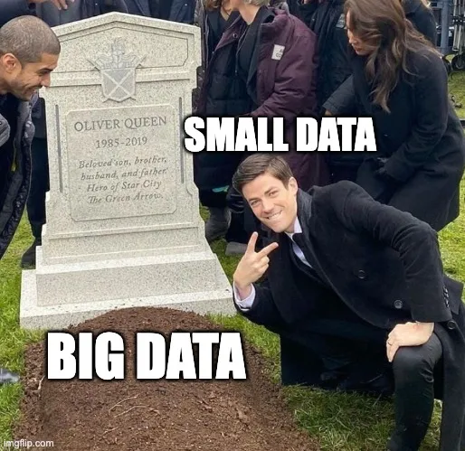
Otherwise
Solution 1: reduce your data
- work on a subset / sample
- read only the columns you need
- batch
Solution 2: parallelise
- more cores on one machine (polars, DuckDB, …)
- more machines (Dask, Spark, HPC jobs)
- dedicated tools: xan for CSV
Where to run: a decision tree
- Fits in your laptop RAM, runs in minutes → laptop
- Needs more RAM / a GPU / hours → Onyxia datalab
- Needs days, many GPUs, thousands of jobs → HPC (Jean Zay, GENCI)
Start small, then scale
This process of scaling out the analysis can often be daunting, particularly for researchers new to computational methods
What is HPC
- A cluster of nodes with a shared file system
- A job scheduler (SLURM): you submit a script, you do not run it
- Queues, allocations, quotas, no GUI: CLI only
- Onyxia / Kubernetes is the middle ground: interactive, containerised, self-service
Know your CLI: Jean Zay
The scale ladder
- One file, on a sample → does the code work?
- One file, full size → does it fit in memory? how long?
- All files, one machine → parallelise
- All files, many machines → HPC
Measure at each step: time, peak memory.
Note
A 32 GB pod left running for a week is not free. Kill your services.
Onyxia
What is Onyxia
- An open-source datalab platform developed by INSEE
- Instances:
- GENES: https://onyxia.lab.groupe-genes.fr
- INSEE SSPCloud: https://datalab.sspcloud.fr
A common entry for different services
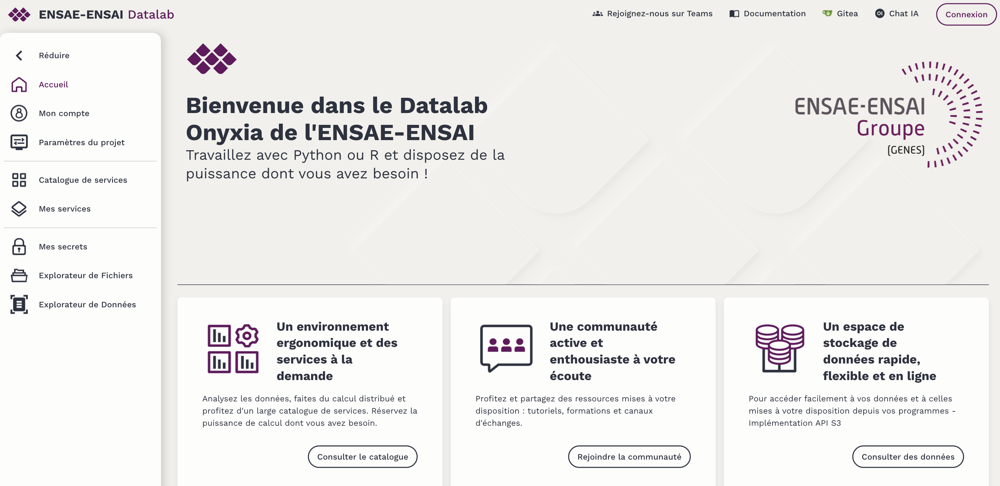
What is a service
- A container (Docker image: OS + Python + Jupyter/VS Code/RStudio…)
- running in a pod on a cluster
- with the resources you asked for (CPU, RAM, GPU, disk)
- ephemeral: when it stops, its local disk is gone
Important
The pod is compute, not storage.
How to launch one (live)
- Catalogue →
vscode-pythonorjupyter-python - Configure: resources, persistence, init script, Git, S3
- Launch → wait → open
- My services: see, delete, read the logs
Parameters that matter
- Resources: CPU request / limit, RAM request / limit, GPU
- Persistence: a volume (survives a restart of the service, not its deletion)
- Init script: install packages at start
- Git: a repository cloned at start, your name/email
- S3: credentials injected as environment variables
Tip
The Kubernetes tab shows the pod events. This is where OOMKilled appears.
How to access storage
- The file browser (“My files”): buckets, upload/download
- In the terminal: the
mcclient
- From Python: S3 is a URL + credentials in the environment
S3 from Python
import os
import pandas as pd
storage_options = {
"client_kwargs": {"endpoint_url": os.environ["AWS_S3_ENDPOINT"]},
"key": os.environ["AWS_ACCESS_KEY_ID"],
"secret": os.environ["AWS_SECRET_ACCESS_KEY"],
"token": os.environ["AWS_SESSION_TOKEN"],
}
df = pd.read_parquet("s3://my-bucket/wiki/simple.parquet",
storage_options=storage_options)Warning
Tokens expire (≈ 24h). Renew from My account → Connect to storage.
What survives what
| Where | Service restarts | Service deleted | Datalab down |
|---|---|---|---|
| file on the pod | ✗ | ✗ | ✗ |
| persistent volume | ✓ | ✗ | ✗ |
| S3 bucket | ✓ | ✓ | ✓ (backup) |
| code on GitHub | ✓ | ✓ | ✓ |
This is the lesson of the afternoon, stated up front.
Hands on (5 min)
- Connect to https://onyxia.lab.groupe-genes.fr
- Launch a
vscode-pythonservice with 2 CPU / 4 GB RAM - Open a terminal and run
Secrets & security hygiene
Never commit
- S3 keys, Hugging Face tokens, GitHub tokens
- SSH private keys
.envfiles, config with passwords- Personal data
Use .gitignore + environment variables + a .env.example without values.
Tokens, passwords, keys
- Password: you, everywhere, forever → the worst
- Token: a service, a scope, an expiry → prefer read-only, short
- Key pair: a public half you share, a private half you never share
If you leak something: revoke first, then clean the history. Prevention is much cheaper.
SSH
What is SSH
- Secure SHell: an encrypted remote terminal
- The universal door to servers and HPC
- (Also one way Git can talk to GitHub; today we use HTTPS + token)
Dedicated Virtual Machine
Command line: a reminder

pwd,ls,cd,mkdir -p,cp,mv,rm -r,cat,headman command/command --help|to chain,>to write

From commands to a script
A file with a .sh extension, one command per line: this is your pipeline.
- First line (the shebang) says which interpreter to use
chmod +x run.shthen./run.sh "0 1 2"(orbash run.sh)$1,$2: the arguments;$VAR: a variable
Create a key
(on Unix / use Onyxia or look how to do in on Windows ;)
Register the public key on the server (on ~/.ssh/authorized_keys)
Then ssh user@SERVER asks for nothing.
Use it
Put you public key in the scratchpad and I give you access
~/.ssh/config to give names to servers:
Host crest
HostName SERVER
User user
IdentityFile ~/.ssh/id_ed25519then ssh crest.
Once on the server
Do your live
- Run tools (R, Jupyter, etc.)
- Manipulate files
- etc.
Code versioning: recap
Git is for code/text, not data
Code & Data
Git is not designed to version data
Data goes to S3 / Zenodo / Git LFS. Git tracks how to get and transform it.
.gitignore: what Git must not see
A text file at the root of the repository, one pattern per line.
# data and outputs: on S3, not in Git
data/
reports/figures/
*.parquet
*.csv
# secrets
.env
# environments and caches
.venv/
__pycache__/
.ipynb_checkpoints/- Write it before the first commit: a file already tracked stays tracked
- Keep
data/README.mdtracked:!data/README.md git statusshows what is still visible
Branches, merges, conflicts
- A branch is a parallel line of commits:
git switch -c name/feature - A merge (via a PR) brings it back into
main - A conflict happens when two branches changed the same lines
<<<<<<< HEAD
n_bins = 50
=======
n_bins = 100
>>>>>>> alice/histogram- Open the file, keep what you want, remove the markers
git add FILEthengit commit- Small, frequent PRs → fewer conflicts. Pull
mainoften.
The states of a file

The complete workflow
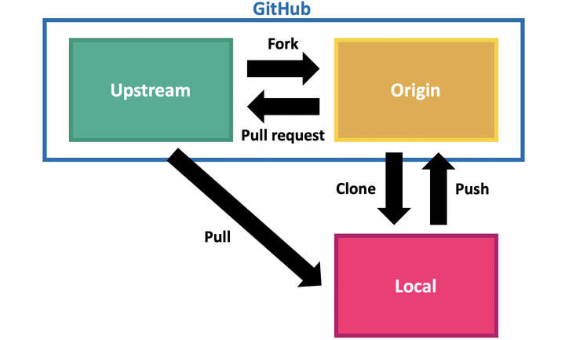
Connect to GitHub with a token
Git talks to GitHub over HTTPS. Your password does not work: you need a personal access token.
- GitHub → Settings → Developer settings → Personal access tokens → Fine-grained
- Scope: your group repository, Contents: read & write, expiry: one week
- Copy it once; it is a secret (doc)
Or
Hands on
The challenge
Deploy a reproducible treatment of a large dataset on Onyxia, with a strict separation between code (GitHub), storage (S3) and compute (an ephemeral service). And keep it small :)
Dataset: Wikipedia Monthly on Hugging Face
Have a look on the dataset
- Were is the data ?
- What is HuggingFace ?
- What is the format ?
What is a Parquet file
- Columnar: read only the columns you need
- Typed schema embedded in the file
- Compressed (snappy, zstd): 3–10× smaller than CSV
- Split in row groups: read a slice without loading everything
- The format of data lakes, Hugging Face, Spark, DuckDB, polars…
On disk ≠ in memory
A 2 GB parquet of text can need 6–10 GB of RAM once loaded in pandas.
The dataset
20250702.en | 17 shards | 17.3 GB | shard 0 = 2.3 GB |Fields: id, url, title, text (clean plain text). Licence CC-BY-SA.
Today: 20250702.en. Shards go from train_00016.parquet (576 MB) up to train_00000.parquet (2.3 GB).
The steps
- Launch a service, update the common repository
- A notebook: download one shard, first analytics
- A script: download the shards, keep the articles mentioning a keyword, upload the built dataset on S3
- Scale: the same script on the big English shards, one file at a time, on a low-memory service
- Other tools for the same job
Rule of the afternoon
At some point I will ask you to delete your service and you will need to reset everything, so you need to keep track :)
Step 1 — A service and a common repository
Setup
Checklist
Take your service in hand
- Clone the repository
- Have a look at the repository structure and the README skeleton
- Each member: add your name to the README in a new branch, commit, push, open a PR, merge one of your teammates’ PR
Note
Check: does git status show your data/ folder? It should not.
Step 2 — A notebook on one shard
Download one shard, in Python
Read the dataset card: fields, licence, shards. Then, in a notebook:
- See the HF CLI
- Find a way to download the smallest shard:
20250702.en/train_00016.parquet(576 MB) - Python or CLI - Where did the file land? How big is it? (
ls -lh data/raw/...)
Get a file
In Python
In CLI
First analytics
In a notebook, with pandas:
- load the shard, look at the columns and a few rows
- plot the histogram of text lengths → save it in
reports/figures/ - print the title of the longest article
- extract the articles mentioning
"data"→data/processed/
Update the repository
- The notebook goes to
notebooks/, the figure toreports/figures/ - The data does not go to Git: check
git status - Commit, push, PR, review by a teammate, merge
Tip
Write in the README what the notebook does and how to get the shard.
Step 3 — A script: download, downsize, upload
From the notebook to a script
The notebook proved the idea on one shard. Now a script runs the whole pipeline:
src/build_dataset.py
- takes a subset name, a list of shards and a keyword as arguments
- downloads each shard from HF (local,
data/raw/) - downsizes: keeps
id, title, url, length(andtext?) of the articles mentioning the keyword - builds one dataset from all the shards →
data/processed/wiki_<keyword>.parquet - option
--delete-raw: deletes the raw shard once loaded (17 GB do not fit on the pod)
Raw shards are disposable. The built dataset is what matters.
Downsize
- How much smaller is the built dataset than the raw shards? (
ls -lh) - What do you keep: the full
textor only its length? What do you lose? - Is it still useful to someone who did not see the raw data? → document it in
data/README.md
Upload the built dataset on S3
- Modify the script to upload the built dataset on a bucket once it is completed.
- Read it back from S3 in a notebook
Run it, and add it to the repository
- Run the script
- Add the requirements
pip freeze > requirements.txt - README: how to run it, where the built dataset is (the S3 path)
data/README.md: what the built dataset contains, from which dump, with which keyword- Commit, push, PR, merge
Note
git status: neither the raw shards nor the built dataset should appear.
Step 4 — Scale, one file at a time
The same script, on the big shards
Now the other end of the list: train_00000.parquet (2.3 GB), train_00001.parquet (1.9 GB)…
On your 4 GB service. Look at your disk while it downloads: df -h .
What happens? Where do you see it? Why?
What happened?
- My services → your service → Kubernetes tab / logs
- Look for
OOMKilled,exit code 137 - The pod was killed by the cluster: it exceeded its RAM limit
- Compressed on disk ≠ in memory; pandas loads everything, as Python objects
Options: a bigger service or not loading what you do not need. Here, we can run a little bigger service to be able to manipulate one shard. If you want to play, there are also solutions to read row groups in parquet.
One file at a time, one piece at a time
Change the script so that the service never holds more than a piece of one shard in memory:
- write the reduced output of each shard as soon as it is done (local, then S3)
--delete-rawbecomes mandatory in practice: 17 GB do not fit on the pod- if the loop stops, restart where it stopped: skip the shards whose output is already on S3
Loop over the files
- Each shard produces one small output on S3
- The built dataset grows shard after shard; the pod stays small
- Commit
build_dataset.py,merge.py,run.sh; update the README
⚠️ Delete your service
Everything on the pod is gone.
- Launch a new service
- Get back to a working state from GitHub + S3 alone
What did you lose (raw shards? the built dataset? the notebook?) Why? Fix it: commit it, or put it on S3.
Step 5 — Other tools for the same job
Look at a parquet without Python: DuckDB
The extraction, three other ways
DuckDB (SQL)
Also on all the raw shards at once with a glob 'data/raw/20250702.en/*.parquet', and directly on S3 with the httpfs extension.
polars (lazy)
xan (CSV)
Wrap-up
Peer re-execution
Swap repositories with another group.
On a fresh service, run the other group’s pipeline from their README only, without asking them anything.
Open an issue on their repository:
- what broke, what was unclear
- how long it took
- one suggestion
Debrief
Three things to remember
- The pod is compute, not storage
- Do not load what you do not need
- If it is not in Git or on S3, it does not exist (at least, in the long time)
Kill your services.
Resources
- The Turing Way — Guide for Reproducible Research
- Onyxia user guide
- Stoudt et al. (2024). Ten simple rules for building and maintaining a responsible data science workflow. PLOS Comp Bio
- UCSD — Data management best practices
- Wickham (2014). Tidy data. JSS
- IDRIS cheat sheet (Jean Zay)
- Software Carpentry — The Unix Shell
- Perez-Riverol et al. (2016). Ten Simple Rules for Taking Advantage of Git and GitHub
CSS Bootcamp 2026 — Day 2 — Data Management & Compute